# Install and load packages# install.packages("tidyverse")# install.packages("tidyr")# install.packages("ggplot2")library(tidyverse)
── Attaching core tidyverse packages ──────────────────────── tidyverse 2.0.0 ──
✔ dplyr 1.1.4 ✔ readr 2.1.5
✔ forcats 1.0.0 ✔ stringr 1.5.1
✔ ggplot2 3.5.1 ✔ tibble 3.2.1
✔ lubridate 1.9.3 ✔ tidyr 1.3.1
✔ purrr 1.0.2
── Conflicts ────────────────────────────────────────── tidyverse_conflicts() ──
✖ dplyr::filter() masks stats::filter()
✖ dplyr::lag() masks stats::lag()
ℹ Use the conflicted package (<http://conflicted.r-lib.org/>) to force all conflicts to become errors
library(readxl)library(tidyr)library(ggplot2)
First, used code provided with download to load in both data frames and merge them.
# Used code provided d1 =read.table("student-mat.csv",sep=";",header=TRUE)d2 =read.table("student-por.csv",sep=";",header=TRUE)d3 =merge(d1, d2, by =c("school","sex","age","address","famsize","Pstatus","Medu","Fedu","Mjob","Fjob","reason","nursery","internet"))print(nrow(d3)) # 382 students
[1] 382
Second, using tidyverse functions, read in data using read_csv2 (due to “;”) and created an inner join using only variables from d3.
# Load .csv files using a local pathmat_data <-as.tibble(read.csv2("student-mat.csv", header =TRUE))
Warning: `as.tibble()` was deprecated in tibble 2.0.0.
ℹ Please use `as_tibble()` instead.
ℹ The signature and semantics have changed, see `?as_tibble`.
Warning in inner_join(mat_data, por_data, by = c("school", "sex", "age", : Detected an unexpected many-to-many relationship between `x` and `y`.
ℹ Row 79 of `x` matches multiple rows in `y`.
ℹ Row 79 of `y` matches multiple rows in `x`.
ℹ If a many-to-many relationship is expected, set `relationship =
"many-to-many"` to silence this warning.
# When inner_joined, there were two issues: one was a warning message (In inner_join(mat_data, por_data, by = c("school", "sex", "age", : Detected an unexpected many-to-many relationship between `x` and `y`.) and the second was that the variables "nursery" and "internet" were out of place compared to the table in d3.
Third, here we use an inner_join all variables except for G1, G2, G3, paid, and absences.
Last, we’re choosing 4 categorical variables (sex, address, famsize, Pstatus) we’re interested in and converting them into factor variables in each tibble. We’re doing this for the math data, POrtuguese data, and the combined data each.
# Using mutate for each tibble conversion, we'll coerce the interested variables into factors.mat_data <- mat_data |>mutate(sex =as.factor(sex), address =as.factor(address), famsize =as.factor(famsize), Pstatus =as.factor(Pstatus))por_data <- por_data |>mutate(sex =as.factor(sex), address =as.factor(address), famsize =as.factor(famsize), Pstatus =as.factor(Pstatus))final_join <- final_join |>mutate(sex =as.factor(sex), address =as.factor(address), famsize =as.factor(famsize), Pstatus =as.factor(Pstatus))
# Recoded these variables with their respective levels.final_join <- final_join |>mutate(sex =recode(sex, "F"="Female", "M"="Male"),address =recode(address, "U"="Urban", "R"="Rural"),famsize =recode(famsize, "LE3"="less or equal to 3", "GT3"="greater than 3"),Pstatus =recode(Pstatus, "A"="apart", "T"="living together") )
Task 2: Summarize the Data (Very Basic EDA
For the items on the combined data, final_join, we’ll be doing the following: one, looking at how the data is stored and two, documenting the missing values in the data.
# 1. Here we print final_join to confirm and check our column types. As seen below, sex, address, famsize, and Pstatus are the correct column types of factor.print(final_join)
# A tibble: 320 × 33
school sex age address famsize Pstatus Medu Fedu Mjob Fjob reason
<chr> <fct> <int> <fct> <fct> <fct> <int> <int> <chr> <chr> <chr>
1 GP Female 18 Urban greater t… apart 4 4 at_h… teac… course
2 GP Female 17 Urban greater t… living… 1 1 at_h… other course
3 GP Female 15 Urban greater t… living… 4 2 heal… serv… home
4 GP Female 16 Urban greater t… living… 3 3 other other home
5 GP Male 16 Urban less or e… living… 4 3 serv… other reput…
6 GP Male 16 Urban less or e… living… 2 2 other other home
7 GP Female 17 Urban greater t… apart 4 4 other teac… home
8 GP Male 15 Urban less or e… apart 3 2 serv… other home
9 GP Male 15 Urban greater t… living… 3 4 other other home
10 GP Female 15 Urban greater t… living… 4 4 teac… heal… reput…
# ℹ 310 more rows
# ℹ 22 more variables: guardian <chr>, traveltime <int>, studytime <int>,
# failures <int>, schoolsup <chr>, famsup <chr>, paid <chr>,
# activities <chr>, nursery <chr>, higher <chr>, internet <chr>,
# romantic <chr>, famrel <int>, freetime <int>, goout <int>, Dalc <int>,
# Walc <int>, health <int>, absences <int>, G1 <int>, G2 <int>, G3 <int>
# 2. Documenting the missing values by using colSums(is.na()). There are no missing values as seen below. print(colSums(is.na(final_join)))
Here we create a one-way, two-way, and three-way contingency table. Contingency tables show the distribution of a variable in the rows and another in its columns.
# One-way contingency table. Below you can see a table of F(female) 174 and M(male) 146. Taking 174, this means that in this final_join, there are a total of 174 females. table(final_join$sex)
Female Male
174 146
# Two-way contingency table. Below we'll take F,GT3 130. This means that based on all family sizes of GT3 (greater > 3), there are a total of 130 females, i.e., this value represents the total number of females that come from family sizes with 3 or more people. table(final_join$sex, final_join$famsize)
greater than 3 less or equal to 3
Female 130 44
Male 100 46
# Three-way contingency table. This time we added Pstatus (parent's cohabitation status - 'T' = living together or 'A' = apart). Below we'll take A,F,GT3 12. This value 12 represents the total amount of female that come from family sizes with 3 or more people with parents' that live apart from each other.table(final_join$sex, final_join$famsize, final_join$Pstatus)
, , = apart
greater than 3 less or equal to 3
Female 12 6
Male 4 9
, , = living together
greater than 3 less or equal to 3
Female 118 38
Male 96 37
For our next item, we have to create a conditional two-way table. One-way will be using filter() and the other way will be doing a three-way table then subsetting it.
# Subsetting with filter() then creating a two-way table. So here we filter our final_join to only show a Pstatus of "A". Then we create a two-way table of sex and family size from that tibble (subset_Apart).subset_Apart <-filter(final_join, Pstatus =="apart")table_sex_famsize_Apart <-table(subset_Apart$sex, subset_Apart$famsize)print(table_sex_famsize_Apart)
greater than 3 less or equal to 3
Female 12 6
Male 4 9
# Three-way table then subsetting. Here we create a three-way table and subset it with Pstatus: "Apart", returning us a table of sex and family size based on a condition that the parents are living apart.three_way_sub <-table(final_join$sex, final_join$famsize, final_join$Pstatus)three_way_sub[ , , "apart"]
greater than 3 less or equal to 3
Female 12 6
Male 4 9
Now we’re going to create a two-way contingency table using group_by() and summarize() using dplyr from tidyverse and pivot_wider from tidyr.
# First we're taking final_join and piping it to be grouped by sex and famsize then summarized by sex to create a summary for each group then pivot_wider for a wider format for the display... making it more like a table output.final_join |>group_by(sex, famsize) |>summarize(count =n()) |>pivot_wider(names_from = famsize, values_from = count)
`summarise()` has grouped output by 'sex'. You can override using the `.groups`
argument.
# A tibble: 2 × 3
# Groups: sex [2]
sex `greater than 3` `less or equal to 3`
<fct> <int> <int>
1 Female 130 44
2 Male 100 46
Last, we’ll create a stacked bar graph and a side-by-side bar graph with labels.
# Here we're creating our stacked bar graph. Using ggplot, we're creating a stacked bar graph between sex and famsize. Using drop_na we remove the rows where sex is missing, aes for the aesthetics, geom_bar for adding a bars to the plot, ggtitle for adding a title, theme for centering the title, labs to label axis, scale_fill... for renaming the legend.sex_famsize_stack <-ggplot(data = final_join |>drop_na(sex),aes(x = sex, fill = famsize)) +geom_bar() +ggtitle("Sex and Family (Stacked Bar Graph)") +theme(plot.title =element_text(hjust =0.5)) +labs(x ="Sex",y ="Count") +scale_fill_discrete("Family Size")sex_famsize_stack
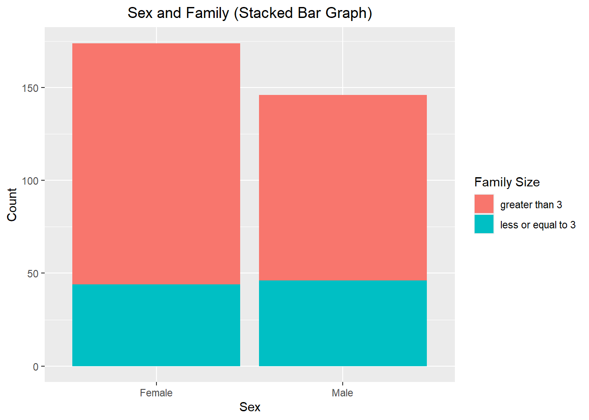
For this previous stacked bar graph, it’s telling us the count of females and males that are in family sizes of either greater than 3 or less than 3. As per the legend, red denotes a family size of greater than 3 and blue denotes a family size of less than 3. The x-axis denotes the sex, whereas the y-axis represents the count of males and females based on family size. Something interesting we see here is that for both males and females, there are more them in family sizes that are greater than 3, almost two to three times more than those in a family size of less or equal to 3. The stacked bar graph visualizes the sexes as a whole, allowing you to see how each sex contributes to the total count visually, however, it makes it difficult to compare individual values.
# Next we'll create a side-by-side bar graph using sex and famsize. Everything is similar to the previous code except to make it a side-by-side bar graph, we need to add "position = "dodge" to the geom_bar.sex_famsize_side <-ggplot(data = final_join |>drop_na(sex),aes(x = sex, fill = famsize)) +geom_bar(position ="dodge") +ggtitle("Sex and Family (Side-by-Side Bar Graph)") +theme(plot.title =element_text(hjust =0.5)) +labs(x ="Sex",y ="Count") +scale_fill_discrete("Family Size")print(sex_famsize_side)
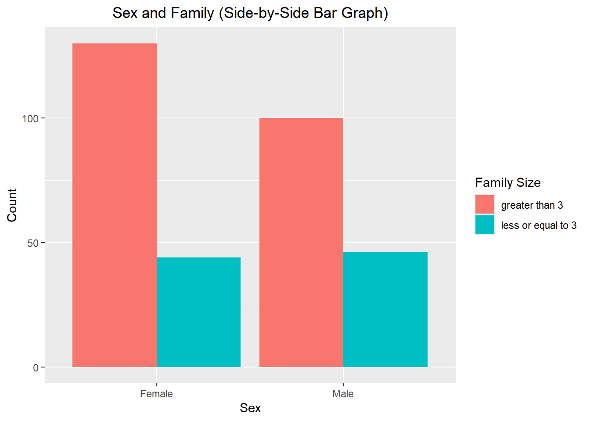
This side-by-side graph, even though same in values as the stacked bar graph, allows for easier visual comparison of the values between the sexes.
Numeric Variables (and across groups)
First we’ll find the measures of center and spread for three variables (age = student’s age (numeric: from 15 to 22), absences = number of school absences (numeric: from 0 to 93), and G3 = final grade (numeric: from 0 to 20, output target)). As a note for later, G1 = first period grade (numeric: from 0 to 20) and G2 = second period grade (numeric: from 0 to 20).
# Summarizing measures of center (mean and median) and spread (standard deviation and inter-quartile range).num_var_summary <- final_join |>summarize(mean_age =mean(age, na.rm =TRUE), mean_absences =mean(absences, na.rm =TRUE), mean_G3 =mean(G3, na.rm =TRUE),median_age =median(age, na.rm =TRUE),median_absences =mean(absences, na.rm =TRUE),median_G3 =median(G3, na.rm =TRUE),sd_age =sd(age, na.rm =TRUE),sd_absences =sd(absences, na.rm =TRUE),sd_G3 =sd(G3, na.rm =TRUE),IQR_age =IQR(age, na.rm =TRUE),IQR_absences =IQR(absences, na.rm =TRUE),IQR_G3 =IQR(G3, na.rm =TRUE) )# Repeat by subsetting the data in a meaningful way by checking for outliers.absencesonly <- final_join$absencesabsences_summary <-fivenum(absencesonly)print(absences_summary)
[1] 0.0 0.0 4.0 7.5 75.0
# Finding upper and lower fence for outliers7.5+1.5*7.5
[1] 18.75
0-1.5*7.5
[1] -11.25
# Subsetting final_join table for absence outliers then comparing means of absences from original table to the one without outliers.absences_outlier_filter <- final_join |>filter(absences <18.75)absences_outlier_filter
# A tibble: 308 × 33
school sex age address famsize Pstatus Medu Fedu Mjob Fjob reason
<chr> <fct> <int> <fct> <fct> <fct> <int> <int> <chr> <chr> <chr>
1 GP Female 18 Urban greater t… apart 4 4 at_h… teac… course
2 GP Female 17 Urban greater t… living… 1 1 at_h… other course
3 GP Female 15 Urban greater t… living… 4 2 heal… serv… home
4 GP Female 16 Urban greater t… living… 3 3 other other home
5 GP Male 16 Urban less or e… living… 4 3 serv… other reput…
6 GP Male 16 Urban less or e… living… 2 2 other other home
7 GP Female 17 Urban greater t… apart 4 4 other teac… home
8 GP Male 15 Urban less or e… apart 3 2 serv… other home
9 GP Male 15 Urban greater t… living… 3 4 other other home
10 GP Female 15 Urban greater t… living… 4 4 teac… heal… reput…
# ℹ 298 more rows
# ℹ 22 more variables: guardian <chr>, traveltime <int>, studytime <int>,
# failures <int>, schoolsup <chr>, famsup <chr>, paid <chr>,
# activities <chr>, nursery <chr>, higher <chr>, internet <chr>,
# romantic <chr>, famrel <int>, freetime <int>, goout <int>, Dalc <int>,
# Walc <int>, health <int>, absences <int>, G1 <int>, G2 <int>, G3 <int>
After obtaining the measures of center and spread for my selected variables, I decided to take the five number summary of absences. From there I found the IQR and used that to find at which what # of absences would become an outlier. IQR = Q3 - Q1, 7.5 - 0 = 7.5. Upper fence (Q3 + 1.5IQR) = 18.75. Anything pass this is number is an outlier. Lower fence (Q1 - 1.5IQR) = -11.25. Since it’s not possible to have negative absences, this means that no actual values fall below this point in the given dataset, or in this case, 0. For this reason, we’ll ignore the lower fence. Then I subsetted the data to filter out potential outliers to see if how our data is heavily skewed by the outliers. There were a total of 12 outliers. Here are the values for absences, before and after: Original Dataset: Mean, Median, SD, IQR: 5.4125, 5.4125, 7.8352, 7.25 No Outliers Data: Mean, Median, SD, IQR: 4.33, 4.33, 4.54, 6.
By removing the outliers we can better understand how the data behaves without the extreme values that affect the center and spread. This is very helpful and can provide us a better picture of how the data typically behaves and helps us better understanding trends/patterns to make informed decisions about the data. *Notes: Outliers increase the variability in your data, which decreases statistical power. Consequently, excluding outliers can cause your results to become statistically significant.
Finding measures of center and spread across a single grouping variable of sex.
For this previous summary that we subsetted, we’re looking at the mean, median, standard deviation (sd), and IQR of age, absences, and IQR for males and females. We can see that the mean ages for male (16.397) and female (16.632) are similar, meaning it’s balanced across the dataset - also similar to the standard deviation of the age. However, for absences, females have more absences of 5.782 compared to males which have a mean of 4.973. Interestingly enough, the mean G3 (final grade) of females (10.4) are lower than males (11.8), potentially showcasing that maybe having more absences could affect your final grade. Looking at sd, females are 9.392, compared to males 5.428, showing a wider variance of absences in females than males. As for IQR of final grades, both sexes are at a 5, but when coupled with the mean, males show a higher range of performance.
Finding measures of center and spread across a two grouping variables of sex and family size.
`summarise()` has grouped output by 'sex'. You can override using the `.groups`
argument.
summary_by_sex_famsize
# A tibble: 4 × 14
# Groups: sex [2]
sex famsize mean_age mean_absences mean_G3 median_age median_absences
<fct> <fct> <dbl> <dbl> <dbl> <dbl> <dbl>
1 Female greater than… 16.6 5.81 10.2 17 5.81
2 Female less or equa… 16.6 5.70 11.2 17 5.70
3 Male greater than… 16.3 4.53 11.6 16 4.53
4 Male less or equa… 16.6 5.93 12.2 17 5.93
# ℹ 7 more variables: median_G3 <dbl>, sd_age <dbl>, sd_absences <dbl>,
# sd_G3 <dbl>, IQR_age <dbl>, IQR_absences <dbl>, IQR_G3 <dbl>
This summary above shows the mean, median, sd, and IQR of age, absences, and final grades based on sex and family size. In the previous summary we only looked at sex, but now we’re also looking at family size. Something interesting to note is males that are in family sizes greater than 3 have the lowest mean absences of 4.53 out of the compared to the female categories (female/GT3 (5.81) and female/LT3 (5.70)). However, when looking at males/LT3, the mean absences are the highest at a mean of 5.93. This potentially shows that maybe family size has an affect on absences. When looking at the grades, both male in families of GT3 (12.20) and LT3 (11.58) have the highest final grade mean compared to the female GT3 (10.15) and LT3 (11.23). Now looking at sd, while female GT3 absences, there’s an sd of 9.56, the highest of all the groups… even though females have similar mean absences, their sd shows that there’s a wider sd, either indicating a higher variability in absences or there might be an outlier in the data. Values for median and and IQR are balanced and within a value of 2 for all grouped variables.
Create a correlation matrix between all numeric variables.
# Assigned variable num_vars to the numerical variables of final_join.num_vars <- final_join |>select(age, absences, G1, G2, G3)# Assigned num_cor_matrix to create a correlation of num_varsnum_cor_matrix <- num_vars |>cor(num_vars[,c("age", "absences", "G1", "G2", "G3")])num_cor_matrix
# Checked to see that type was matrixclass(num_cor_matrix)
[1] "matrix" "array"
For this correlation matrix above, we’re measuring the association between five numeric variables. When measuring the association between variables, the correlation values (-1 to 1) indicate the strength and direction of the relationship between the two variables. -1 indicates a strong negative correlation, meaning that everytime x increases, y decreases. 0 means that there is no association between the two variables, x and y. 1 indicates a strong positive correlation, meaning that y increases with x. All of matrix values that are 1 is because the matrix is finding the association between the variable with itself (i.e., age and age, absences and absences, etc.). First we’ll start with age and absences, with a correlation of 0.144 this is considered a weak positive correlation, meaning that older students tend to have slightly more absences, but the relationship between the two variables aren’t very strong. As for age and the G variables, G1 (-0.110), G2 (-0.186), and G3 (-0.206), they all indicate a weak negative correlation, between the values of -0.10 and -0.20. This means that older students tend to score slightly lower, however, the relationship between age and the G variables aren’t very strong. Next we have absences. The correlation between absences and all of the G variables are all -0.100 to 0, indicating a weak negative correlation. Because it’s so close to 0, these values show either no relationship or a very slight relationship, meaning that absences may only have a very slight effect on grades. Last, we’ll look at the correlation between the grade variables. G1 and G2 should a strong positive correlation of 0.866, indicating that the relationship between these variables are strong; this means that those who had scored well in G1 may tend to do well in G2. Next is G1 and G3, which shows a correlation of 0.819, also indicating a pretty strong positive correlation. While the correlation of G1 and G3 might not be as strong as the other two, it still shows an overall strong relationship. Last, G2 and G3 has a correlation of 0.914, also indicating a strong positive correlation; this means that those who did well in G2 tend to do well for G3, their final grade.
Create a histogram, kernel density plot, and boxplot for two of the numeric variables across one categorical variable.
# Creating a histogram with age, G3, and address, both numeric variables will be compared in the same plot.age_g3_add_histogram <-ggplot(final_join |>drop_na(age, G3)) +geom_histogram(aes(x = age, fill = address), binwidth =1, alpha =0.5, position ="identity") +geom_histogram(aes(x = G3, fill = address), binwidth =1, alpha =0.5, position ="identity") +ggtitle("Histogram of Age and G3 across Address") +theme(plot.title =element_text(hjust =0.5)) +labs(x ="Age and G3", y ="Count", fill ="Address Variables")age_g3_add_histogram
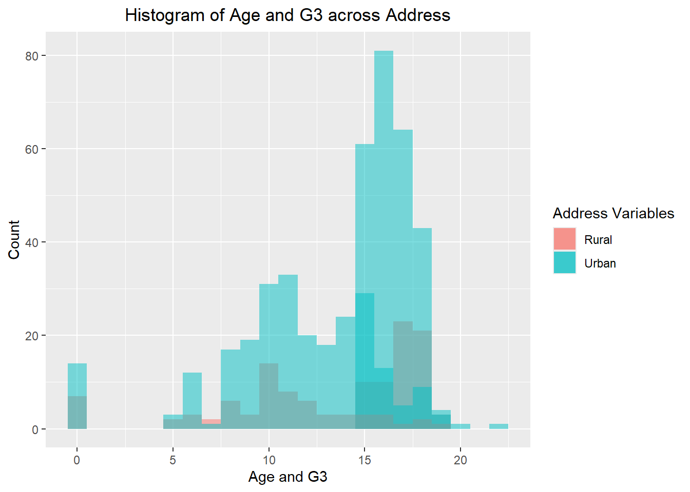
Using the same variables, we created a histogram. This histogram contains the same information from the density plot but is different visually. Most of the rural data is covered by the urban data, making a little hard to read due to the overlapping histograms. Additionally, we made the binwidth = 1 for readability and used position identity to plot the values as they appear in the dataset. Using fill here would create stacked histograms and be shown as proportion of the total instead. Density plots don’t have the same problem as overlapping histograms, especially in multiple distributions, due to the continuous density lines that help keep the distributions separate. Just making notes for later studying -> (https://clauswilke.com/dataviz/histograms-density-plots.html).
# Creating a density plot with age, G3, and address, both numeric variables will be compared in the same plot.age_g3_add_density <-ggplot(final_join |>drop_na(age, G3), aes(x = age, fill = address)) +geom_density(alpha =0.5) +geom_density(aes(x = G3, fill = address), alpha =0.5) +ggtitle("Density Plot (Smoothed Histogram) of Age and G3 across Address") +labs(x ="Age and G3", y ="Density", fill ="Address Variables") +theme(plot.title =element_text(hjust =0.5))age_g3_add_density
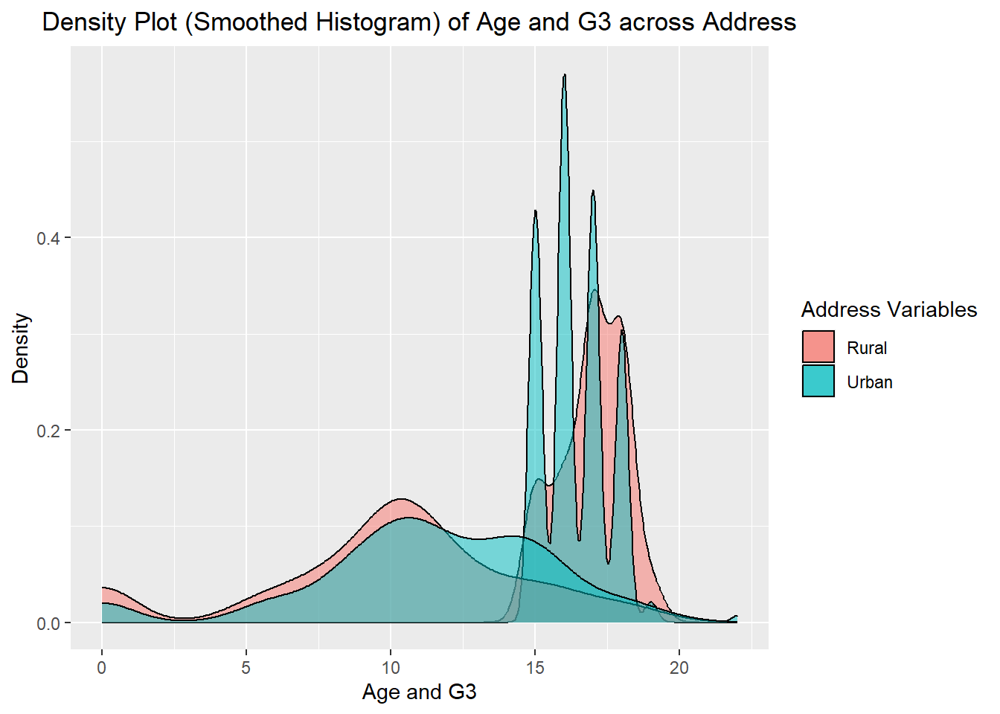
For this density plot (smoothed histogram), this shows the distribution of age and G3, distinguished by address (urban vs. rural). The color scheme for address is as follows: red indicates a student’s home address as rural and blue indicates a student’s home address as urban. As seen here from the higher peaks (age distribution) most students are between the ages of 15 to 17, as previously shown in our summaries. The blue peaks indicate that urban students are primarily made up of younger students from 15 to 17. As for red, it seems that there is a small red peak, indicating that there are slightly more rural students around the age of 18 to 20. The lower peaked plots represent G3, final grade, distribution. Looking at the plot, majority of the grades fall between 8 and 12, peaking at around 10 for both rural and urban students (and another slight peak for urban at 15). When comparing both plots, urban students seem to have a wider distribution for both age and final grade, whereas rural students seem to have more of a concentrated distribution.
# Creating a box plot with age, G3, and address, both numeric variables will be compared in the same plot.age_g3_add_boxplot <-ggplot(final_join |>drop_na(age, G3), aes(x = address)) +geom_boxplot(aes(y = age, fill = address)) +geom_boxplot(aes(y = G3, fill = address)) +ggtitle("Boxplot of Age and G3 across Address") +theme(plot.title =element_text(hjust =0.5)) +labs(x ="Age and G3", y ="Values", fill ="Address Variables")age_g3_add_boxplot
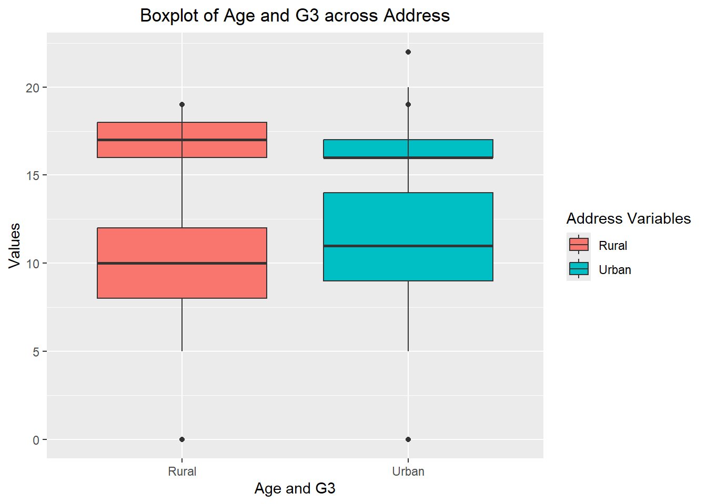
This boxplot provides us a five number summary describing the distribution of values age and G3 across address. The five number summary include: maximum (max values in Q3 + 1.5xIQR), median (Q2), minimum (minimum values in Q1 - 1.5xIQR), as well as the 25th (Q1) and 75th (Q3) percentile, which gives us the IQR (Q3 - Q1). These are useful for comparing and visualizing the numeric datas’ distribution, especially for identifying outliers.
Create two scatterplots relating a G3 variable to other numeric variables (put G3 on y-axis). Jitter the points if they sit on top of each other. Color points by a categorical variable in each. Add appropriate titles and labels.
# Creating scatter plot #1, age and G3 by addressg3_age_scatterplot <-ggplot(final_join |>drop_na(age, G3), aes(x = age, y = G3, color = address)) +geom_jitter(width =0.2, alpha =0.6) +ggtitle("Scatterplot of Age and G3 by Address") +theme(plot.title =element_text(hjust =0.5)) +labs(x ="Age (Student Age)", y ="G3 (Final Grade, 0-20)", color ="Address Variables")g3_age_scatterplot
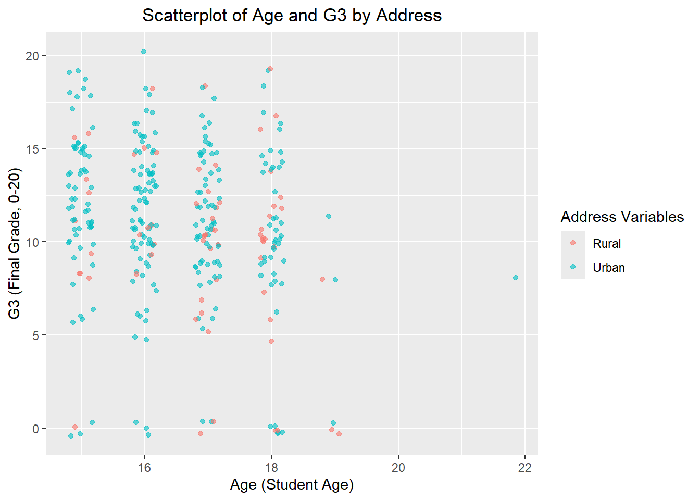
# Creating scatter plot #2, absences and G3 by addressg3_absences_scatterplot <-ggplot(final_join |>drop_na(absences, G3), aes(x = absences, y = G3, color = address)) +geom_jitter(width =0.2, alpha =0.6) +ggtitle("Scatterplot of Absences and G3 by Address") +theme(plot.title =element_text(hjust =0.5)) +labs(x ="Absences (# of school absences)", y ="G3 (Final Grade, 0-20)", color ="Address Variables")g3_absences_scatterplot
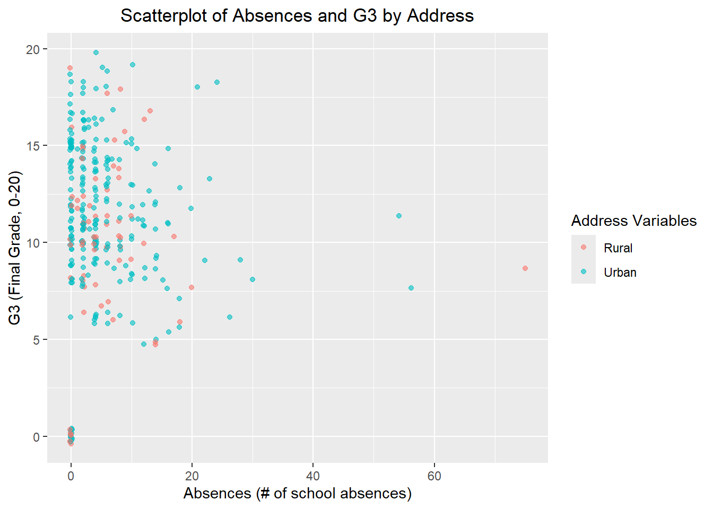
Above are two scatter plots (#1: age and G3 by address and #2: absences and G3 by address). Scatter plot #1, age and G3, shows a very weak correlation with no distinct pattern/association. When referring back to the matrix correlation, the correlation between age and G3 was -0.206, indicating a very weak negative relationship between age and final grade… revealing that older students that are 18+ have lower scores than those of the younger students. Additionally, we looked at this by address. So when comparing the relationship between urban and rural students, they showed similar performance with a pretty balanced spread across the scatter plot. Scatter plot #2, absence and G3, shows a very weak negative correlation. Looking back at the matrix correlation, the correlation between absences and G3 was -0.028, indicating a very slight relationship, meaning that absences may only have a very slight effect on grades. When observing by address, there is no clear relationship or pattern between urban and rural students, indicating that perhaps there isn’t much of a difference between the two students in terms of absences and G3 correlation. Something interesting to point out is that there might be a few potential outliers… having 70+ absences is definitely not normal!
Repeat previous scatter plot step while using faceting for a different categorical variable.
# For scatter plot #1, we'll facet with the categorical variable family size.g3_age_facet <-ggplot(final_join |>drop_na(age, G3), aes(x = age, y = G3, color = address)) +geom_jitter(width =0.2, alpha =0.6) +facet_wrap(~ famsize) +ggtitle("Scatterplot of Age and G3 by Address with Family Size Facet") +theme(plot.title =element_text(hjust =0.5)) +labs(x ="Age (Student Age)", y ="G3 (Final Grade, 0-20)", color ="Address Variables")g3_age_facet
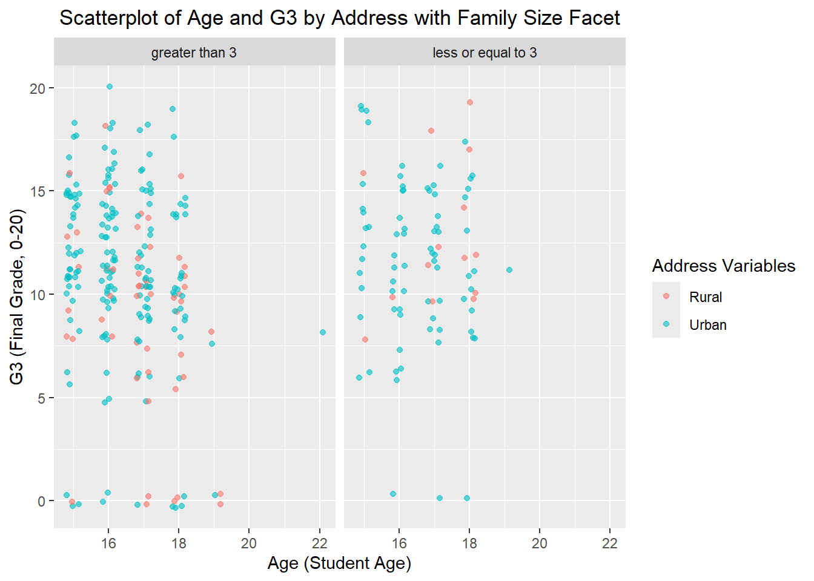
# For scatter plot #2, we'll facet with the categorical variable family size.g3_absences_facet <-ggplot(final_join |>drop_na(age, G3), aes(x = absences, y = G3, color = address)) +geom_jitter(width =0.2, alpha =0.6) +facet_wrap(~ famsize) +ggtitle("Scatterplot of Absences and G3 by Address with Family Size Facet") +theme(plot.title =element_text(hjust =0.5)) +labs(x ="Absences (# of school absences)", y ="G3 (Final Grade, 0-20)", color ="Address Variables")g3_absences_facet
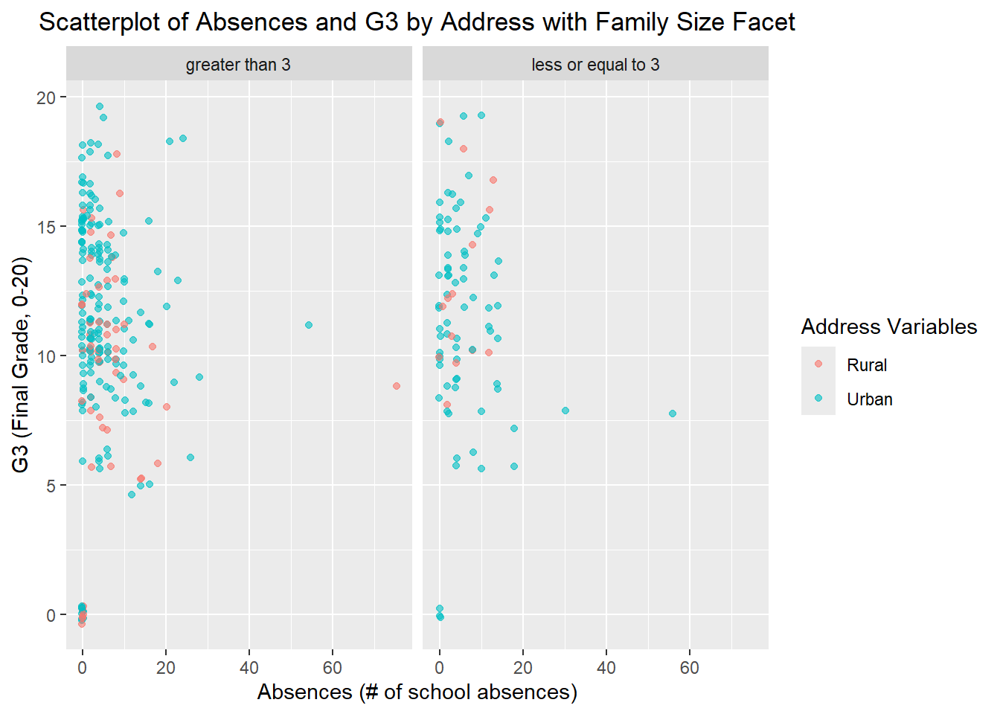
We took both of these scatter plots from the previous prompt and applied faceting using facet_wrap(). Faceting is a way to take our plots to produce similar plots across another variable. For these scatter plots, I chose to facet with family size. So in addition to the variables of scatter plot #1 (age, G3, and address) and scatter plot #2 (absences, G3, and address), we’ve added family size to facet with, as this is a way to create multiple subplots based on the factors of the categorical variable. In this case, both plots will be split into two with us now being able to visualize the plots under famsize’s different levels, greater than 3 [family members] or less than 3 [family members]. Both of these facets now allow us to see how relationship between age/absences and G3 changes based on family size across address type. Essentially faceting helps us better/clearly visualize and further compare the relationships across many different categories. *Notes: Faceting helps reduce visual noise by breaking the plot down further. Allows you to have a single, common axis for all facets to easily scan and analyze across all panels to make a direct comparison of data.
Repeat previous scatter plot step while using faceting for 2 categorical variables.
# For scatter plot #1, we'll facet with the categorical variable family size AND Pstatus (parent cohabitation status).g3_age_facet2 <-ggplot(final_join |>drop_na(age, G3), aes(x = age, y = G3, color = address)) +geom_jitter(width =0.2, alpha =0.6) +facet_wrap(vars(famsize, Pstatus)) +ggtitle("Scatterplot of Age and G3 by Address with Family Size and Pstatus Facets") +theme(plot.title =element_text(hjust =0.5)) +labs(x ="Age (Student Age)", y ="G3 (Final Grade, 0-20)", color ="Address Variables")g3_age_facet2
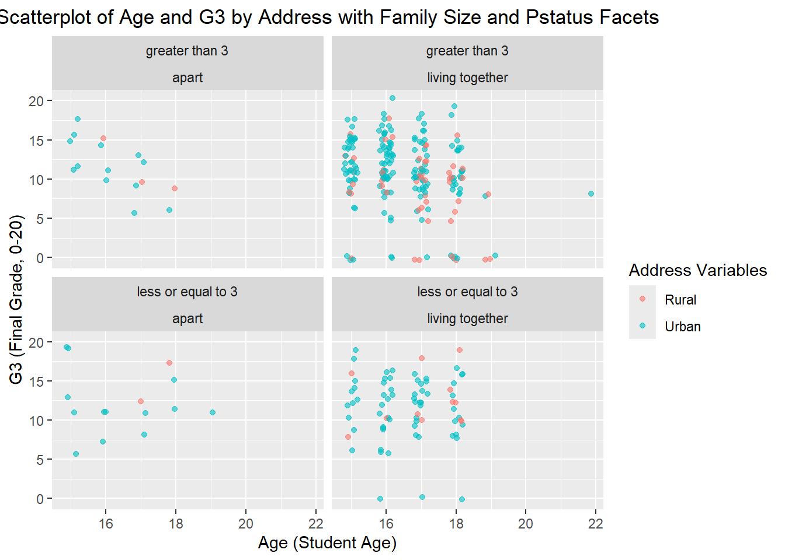
# For scatter plot #2, we'll facet with the categorical variable family size AND Pstatus (parent cohabitation status).g3_absences_facet2 <-ggplot(final_join |>drop_na(age, G3), aes(x = absences, y = G3, color = address)) +geom_jitter(width =0.2, alpha =0.6) +facet_wrap(vars(famsize, Pstatus)) +ggtitle("Scatterplot of Absences and G3 by Address with Family Size and Pstatus Facets") +theme(plot.title =element_text(hjust =0.5)) +labs(x ="Absences (# of school absences)", y ="G3 (Final Grade, 0-20)", color ="Address Variables")g3_absences_facet2
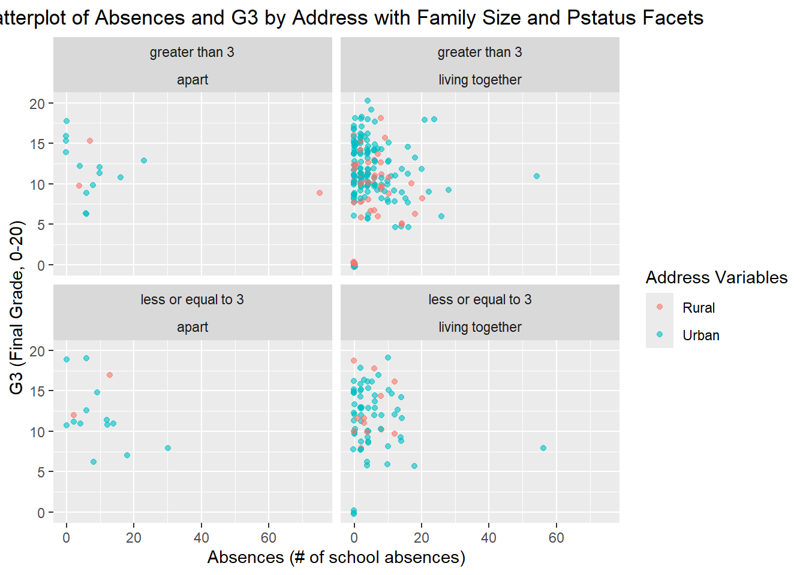
For these scatter plots, in addition to faceting with family size from the last prompt, this time we’re also faceting with Pstatus for a total of two categorical variables at each subplot. This allows us to split our dataset into four plots by the factors of Pstatus (apart, together) and Family Size (greater than 3, less than 3), allowing us to compare different pairings of family size and parental cohabitation status’ in relationship to absences and G3. Something interesting to note is that for both scatter plots (age and G3, absences and G3), there weren’t many data points when parents lived apart compared to those who lived together. In addition, majority of those data points where parents lived apart come from urban households. *Notes: can also use facet_wrap(vars(var1, var2)), x1 ~ x2, or nrow = # to control nrows/ncols